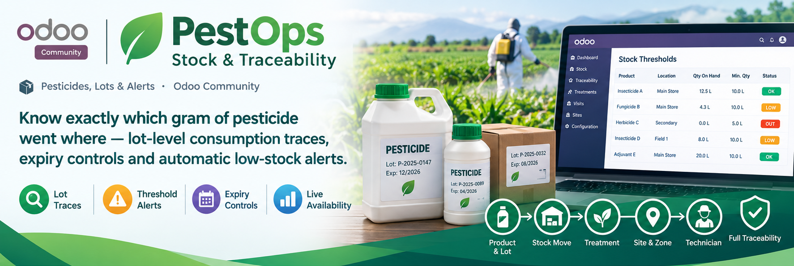
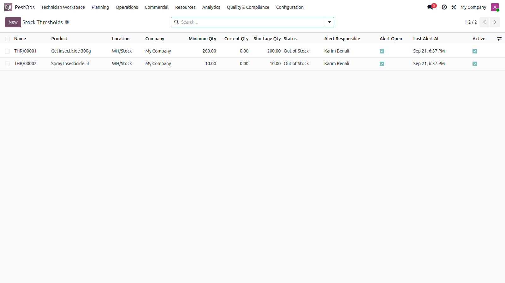
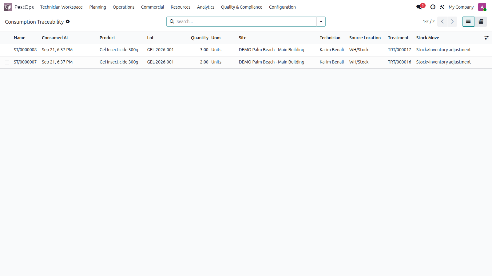

📦 Pesticides, Lots & Alerts · Odoo Community
🔍 Lot Traces ⚠️ Threshold Alerts ✅ Expiry Controls 📊 Live Availability


Thresholds with live status and open alerts.
Regulators, food-safety auditors and key accounts all ask the same question: prove what you sprayed. Every consumption is traced from treatment to stock move.
🧪 Regulated Products 🏭 Food Plants 🏥 Sensitive Sites 📋 Audit Defense
Consuming a treatment line creates a real, validated stock move and an immutable trace record binding product, lot, source location, stock move, treatment, visit, site, zone and technician — with lot expiry captured at the second of use.

Consumption traces: product, lot, move, visit and site.
Set a minimum quantity per product and location; live status (OK / low / out) is computed continuously and a low-stock activity alert lands with the responsible user. Before any consumption, the engine pre-validates lots, expiry and — for storables — real availability.
| Odoo Version | Community |
|---|---|
| License | LGPL-3 |
| Module Type | Extension (requires PestOps Core) |
| Dependencies | pestops_core, stock |
| External Services | None required |
📧 imazighenapps@gmail.com — fast response 🔄 Free Updates